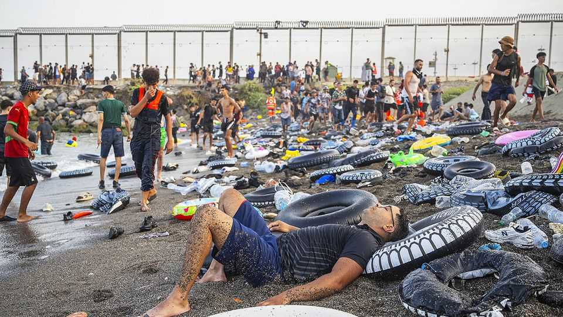
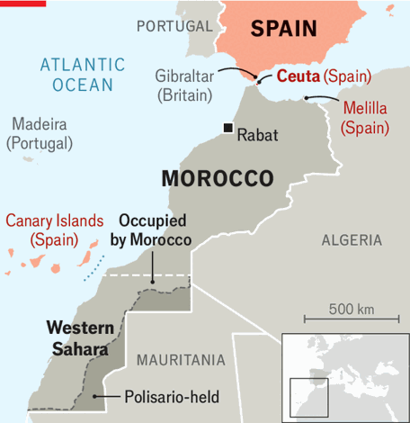
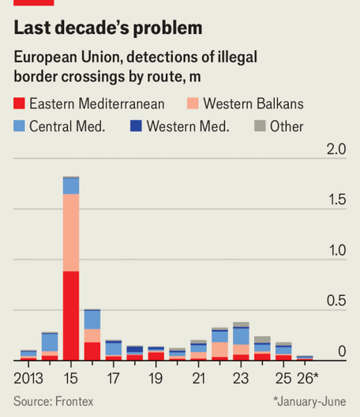

Europe encourages its neighbours to practise migration blackmail
The surge in Ceuta is over, but the EU’s panic leaves scars

Aug 6th 2026
IT WAS like a tide surging onto the beach and then ebbing, leaving wreckage behind. The vast majority of the tens of thousands of would-be migrants who began rushing into Ceuta, a small Spanish exclave on the north African coast, on July 30th returned to Morocco within 24 hours, having found nothing to eat and no prospect of reaching Europe. Discarded shoes and shirts still litter the bay. A few thousand migrants remain, mainly sub-Saharan Africans and minors, as does a heavy police presence. Yet though the immediate crisis is over, the clash it triggered in the European Union will leave scars.
The surge almost doubled Ceuta’s population of 84,000, briefly overwhelming the town. At least 141 migrants drowned trying to swim around the breakwater at the main crossing-point from Morocco. Far-right agitators from Europe, several of whom flocked to the exclave, inflamed the situation with videos warning of “ethnic replacement”. Elon Musk and J.D. Vance, America’s vice-president, joined the fray. Yet as alarm spread the crisis was abating. On August 4th Spain’s interior minister said that 70,000 of the 72,000 who entered Ceuta had returned to Morocco. Some 1,100 unaccompanied minors are to be transferred to Spain.

Not all the factors behind the surge are clear. A recent ruling by Spain’s Supreme Court, which excluded migrants arriving by sea from rules allowing border pushbacks, played a role. Migrants still in the exclave attest that word of this got around on social media. “The Spanish government is easier for migration” than others in Europe, claims Asif, who says he travelled 20 days from Sudan before joining the surge. Some see the hand of Morocco itself. There is plenty of evidence that border guards stopped intercepting the migrants or even helped them on their way—before co-operating in their repatriation.
The extraordinary images prompted panic across Europe. Italy, backed by Denmark and Finland, said it would suspend co-operation with Spain in the passport-free Schengen zone (in the end it imposed minor spot checks at ports and airports). Sweden’s prime minister, facing a tricky re-election bid next month, said “2015 must not happen again,” a reference to a huge migration surge into Europe that still haunts governments. Conservative politicians said Spain’s recent amnesty of illegal immigrants, mainly Latin Americans, who one day may be able to move elsewhere in the EU, might have served as a pull factor.
European irritation at Spain’s rejection of NATO’s spending targets did not help its case. But Pedro Sánchez, Spain’s Socialist prime minister, hit back, denouncing the lack of solidarity as “driven by prejudice, fake news, ignorance or political interest”. Travel from Ceuta to the mainland requires the inspection of documents, he noted, so migrants could not enter Europe.
By August 4th, when the EU’s interior ministers held an emergency videoconference, all had been forgiven. There was “full solidarity with Spain”, said Magnus Brunner, the EU’s migration commissioner. Gone was talk of expulsion from Schengen. Instead the ministers retreated to familiar talking-points: strengthening the EU’s borders; tackling smuggling networks; speeding up returns of failed asylum-seekers, including to third countries.

Irregular migration to the EU is at a fraction of the figure just three years ago (see chart), and is still falling. European governments credit their own policies for the decline; others see external developments, such as the fall of Bashar al-Assad in Syria, as decisive. Either way, the drop does not appear to have opened up breathing-space for politicians. “We haven’t really learned the lessons from that episode,” says Ruben Andersson, a professor of social anthropology at Oxford University.
Troublingly, by falling so quickly into quarrels, European governments have sent their neighbours a signal: nothing divides the EU like images of young men streaming across borders. Over the past decade Europe has struck a series of deals with governments to keep migrants away: starting with Turkey in 2016, and extending across north Africa and beyond. This outsourcing has reduced the pressure. But it also “creates an incentive to third countries to stir up crises—and offer to resolve them”, argues Mr Andersson.
Europe has long experience of such migration blackmail. In 2008 Muammar Qaddafi, then Libya’s dictator, secured billions from Italy to keep African migrants away; two years later he warned an audience in Rome that “tomorrow Europe might no longer be European and might even be black”. Recep Tayyip Erdogan, Turkey’s president, has extracted billions from the EU to keep Syrian refugees in his country. In 2021 Morocco let some 8,000 people wade into Ceuta in retaliation for letting the leader of Polisario, a rebel group in Western Sahara (a territory annexed by Morocco), visit Spain for medical treatment. Spain later adjusted its policy on Western Sahara to Morocco’s liking.
Most shamelessly, since 2021 Belarus has flown in Middle Eastern migrants and sent them into Poland and neighbouring states. Regarding this as an act of hybrid war, in 2021 the EU strengthened its sanctions on Belarus, an ally of Vladimir Putin. It is a different story with the external custodians of the EU’s migration policy. Although there is no clear evidence that Morocco orchestrated the movement of migrants, its security officials certainly let them stream past. Yet European governments hailed Morocco’s co-operation, reserving their animus for nameless malefactors on social media and smuggling gangs. The EU needs Morocco’s help to keep migrants away, including from the Canary Islands, a far more significant port of arrival.
In fact Ceuta, a small exclave on another continent de facto excluded from the Schengen area, offers few lessons for Europe. In 2015 politicians in Germany or Sweden who saw hundreds of thousands of Syrian and other migrants reach Greece understood this would soon be their problem. That inspired a multitude of measures, including enduring intra-Schengen border checks and a new asylum pact to speed returns from the EU. But none of this is relevant to Ceuta, from where no migrants made it into Schengen and few appear to have lodged asylum claims. “This was not primarily a migration crisis,” says Gemma Pinyol-Jiménez, a migration expert at Instrategies, a consultancy. “It was a geopolitical episode.”
Yet, as the panicked reactions suggest, 2015-16 casts a long shadow. Arguments among European governments during that crisis came close to tearing the EU apart. By letting a temporary and far smaller emergency exert a comparable effect, however briefly, Europe has invited its neighbours to manipulate it again. Stronger borders were meant to prevent that. ■